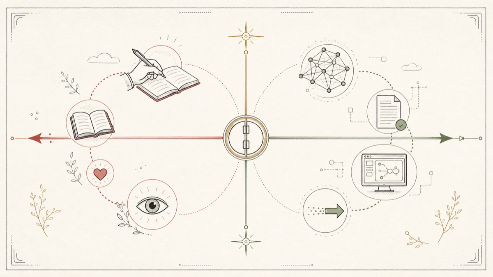
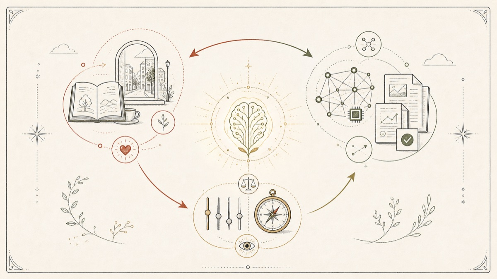

01缘起：AI 越强，我越焦虑
过去一年，我在重度使用 AI：写作、调研、做表、跑代码、做战略选择，几乎每天都在“让 AI 帮我做点什么”。
但慢慢地，我开始觉得不对劲。
- 我发现自己能喂给 AI 的“我”越来越稀薄：长文不读完了、深度对话不见了、街也不逛了，脑子里没有真实经验做储备，AI 替我输出的就只能是“平均答案”。
- 我发现自己驾驭 AI 的判断力在钝化：讽刺的是，越依赖 AI 替我思考，我越判断不出“AI 这次给的到底是好是坏”。
- 我发现自己面对一个决策时，第一反应不再是“我怎么想”，而是“让 AI 帮我分析一下”。
效率确实提高了。但有些东西，正在悄悄从我身上退化。
这不是反 AI，恰恰相反。正因为 AI 太强了，才需要一份“使用说明书”来约束我自己。
所以我给自己写了一部“AI 协作宪法”。它不是任务分配表，更像是一份“我之所以是我”的边界声明。
02核心：两个问题就能定档
我想了很久，最后把判断逻辑收敛成两个问题。这两个问题都不是问“任务在外面长什么样”，而是问“这件事对我意味着什么”。

两个问题叠起来，自然就分出了五档。
03五档分级
| 档位 | 定位 | 一句话理解 |
|---|---|---|
| T1 | 只有我能做 | 这事如果不是我做，做出来还是不是“我”？ |
| T2 | 刻意我做 | 训练我的核心档位，慢和笨拙是练习信号。 |
| T3 | 我主 AI 辅 | 我握决策权和品味，AI 当放大器，而不是代笔。 |
| T4 | AI 主我把关 | 显化我的主战场，方向我给清，AI 跑后我严格 review。 |
| T5 | 全交给 AI | 自己做也不涨手感、不长心力，纯效率税。 |
只有我能做
判断口诀：如果不是我做，做出来还是不是“我”？
- 身份与价值观：我是谁、我相信什么、我反对什么。
- 重大决策：离职、入职、关系开始或结束、搬城市。
- 真实感受：此刻冷不冷、累不累、开不开心。
- 给重要的人写真心话：道歉、悼念、表白、谢意。
- 最终按按钮：可以让 AI 列利弊，但 YES / NO 我按。
刻意我做
判断口诀：这件事做的过程，会不会让我“长出点什么”？
- 关键内容的第一遍：长文初稿、演讲提纲、思维导图。
- 注意力训练：长文阅读不开 AI 摘要、背诵默写、关键算法纸笔推导。
- 身体与觉察：健身、跑步、冥想、呼吸校准。
- 创作灵魂位：一首想写的诗、一段真心想发的视频脚本。
我主 AI 辅
判断口诀：我必须懂、必须负责，但单靠我视野有限、节奏太慢。
- 战略与路径选择：让 AI 列选项、反驳、找漏洞。
- 关键写作的润色：我先出 v0，AI 当 reviewer，而不是作者。
- “私董会”式异步圆桌：召唤不同角色给我多视角输入。
- 周整合的取舍：AI 给候选，我勾选。
AI 主我把关
判断口诀：方向给清了，AI 做能 ≥ 我，那就让 AI 做。
- 调研、综述、对标分析、行业扫描。
- 文档 v0、邮件 v0、PPT 大纲、会议要点。
- 提示词工程：一次写好，跨工具复用。
- 轻量代码、数据处理、Notion 结构搭建。
- 信息聚合成单页 brief。
全交给 AI
判断口诀：自己做也不涨手感、不长心力、不让产物更好。
- 翻译（非文学）、格式转换、文件批处理。
- 信息抓取、会议录音转文字、字幕生成。
- 日程冲突检查、时区协调。
- 客套类沟通模板。给家人的节日问候不在这一档，那是 T1。
04一个反直觉的发现：档位会漂移
做这套体系前，我以为分级是一次性的事。但用了一段时间后我发现：同一件事在不同阶段会漂移到不同档位。
T2 练手感。先让自己慢下来，知道这件事的纹理。
T4 让 AI 跑。此时委托不是偷懒，而是放大。
如果退化，回升到 T2；如果没有，稳定在 T4。
不因为 AI 太强而降档。这是底线，不是效率题。
定期检查：我有没有把训练和真实感受交出去。
三条规则我总结出来：
- 学新东西默认从 T2 起步。先练手感，熟了再下放到 T4。比如学机器学习时手推算法是 T2，工作中跑模型是 T4。
- AI 做完发现手感退化的事，回升一档。发现自己写不出有感觉的文字了，就把“关键文章初稿”从 T4 拉回 T2。
- T1 永远不能因为 AI 太强而降档。这是宪法底线。如果某天我觉得“让 AI 帮我决定吧”，那是逃避信号。
所以我每季度都会校准一次，问自己三个问题：
哪些 T2 的事我连续两周没做？
哪些 T4 的事我把关松了？
哪些事我下意识想从 T1 / T2 降档？
0530 秒决策流程
每接到一个新任务，我会按这个顺序自问：
- 不是我做，做出来还是不是“我”？ 否 → T1
- 这件事是在训练我吗？ 是 → T2
- 我必须懂、必须负责，但单靠我视野有限吗？ 是 → T3
- 方向给清后，AI 做能 ≥ 我吗？ 是 → T4
- 自己做也不涨手感、不长心力、不让产物更好吗？ 是 → T5
练熟之后，30 秒就能判断“这事我该 T 几”。
06为什么我觉得每个人都需要一份
我观察周围重度用 AI 的朋友，大概分两种状态：
能让 AI 做的全都让 AI 做，效率拉满，但慢慢变得没有自己的味道。
固执地什么都自己来，对 AI 警惕到不愿意用，结果被时代节奏甩开。
这两种都不健康。真正的问题不是“用不用 AI”，而是：
哪些事 AI 做完之后，我会变得更像我自己？哪些事 AI 做完之后，我会一点点失去我自己？
这个问题没有标准答案，每个人的清单都不一样。但你必须给自己一个答案，而不是默认让算法和习惯替你回答。
这就是“AI 协作宪法”的意义：它不是反 AI 的；它不是为了限制效率；它是为了在效率红利面前，还能记得自己是谁。
07更深一层：把自己当作那个大模型
你可能在第二节有点疑惑：为什么要用“训练我 / 显化我”“我的浓度”这种说法？这背后藏着一个比“自己做 vs AI 做”更底层的觉察。
未来“会用 AI”会越来越廉价。
现在让 AI 写一篇还行的文章、做一份还行的调研、跑一段还行的代码，已经是几乎人人都能做到的事。当一项能力人人都有，它的市场价格就会逼近零。所以靠“压榨 AI 价值”赚到的红利，会随着模型变强而越来越薄。
那什么不会廉价？
AI 只是训练你、显化你的基础设施。
生活经验、阅读、思考、品味、关系。让你接触真实世界的事，都在变得更值钱。
风格、价值观、判断力。这些只能靠你自己长出来，AI 没法替你训练。
AI 的真正用法不是替代你，而是把你独有的洞察翻译成别人能看到的产物。

回看五档体系你会发现：T1 和 T2 之所以最重要，不是因为它们效率高，而是因为它们在喂养你这个模型。
08一个意外的呼应：巴别塔与尼希米之路
写完这部宪法没多久，我读到 Vatican 官网发布的教宗良十四世通谕 《Magnifica Humanitas》（2026 年 5 月 15 日，副标题是“On Safeguarding the Human Person in the Time of Artificial Intelligence”）。真正打动我的不是“权威说了什么”，而是它在开篇提出的两个隐喻。
用一种语言、一种技术、一个方向追求自我膨胀，把人简化为数据和绩效。结果不是统一，而是分裂和失语。
不靠一个人独断，而是召集不同的人扮演不同角色，先重建关系，再重建城墙。工程的中心始终是人，而不是砖。
它在第 4 节里说，人类从未对自身拥有如此大的权力；第 7 到 10 节把这个问题展开成“建巴别塔，还是重建耶路撒冷”的选择；结尾又把 AI 时代的当务之急落在一句话上：深深地保持为人。
这种权力既可以用来建巴别塔，让 AI 替我们做所有事，包括“做我们自己”；也可以用来重建耶路撒冷，让 AI 协助我们更深地活成自己。
我不是在为宗教立场写注脚，我只是发现：这句话和我那条 T1 红线说的几乎是一件事。有些事让 AI 做完之后，做出来就不是我了。
所以这部宪法，本质上是我自己的“反巴别塔指南”：不是拒绝技术，而是拒绝被技术简化为数据和绩效；不是回避协作，而是把协作的中心，始终放在人，而不是模型权重。
09写给你的三个起手式
如果你也想给自己写一份，不必从五档开始。我建议从最小可行版本开始：
- 先列出你的 T1 清单。3 件事就够：这 3 件事，无论 AI 多强，我都不交出去。
- 再列出你的 T2 清单。3 件事就够：这 3 件事，哪怕 AI 做更快，我也要自己慢慢做，因为过程本身在塑造我。
- 其他事先不管。让它们自然漂移到 T3 / T4 / T5。一个月后回头看，会发现自己的边界已经清晰了一大半。
剩下的，交给时间和复盘。
最后想说的一句：AI 时代最贵的不是会用 AI 的人，而是知道自己是谁、值得被 AI 显化什么的人。
愿你也能在效率红利里，深深地保持为人。也欢迎你写完自己的版本来交换。